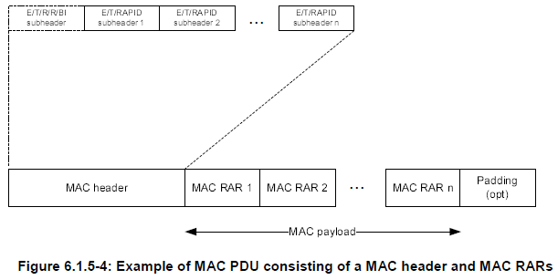

LTE Quick Reference Go Back To Index Home : www.sharetechnote.com
Backoff Indicator
Backoff Indicator is a special MAC subheader that carries the parameter indicating the time delay between a PRACH and the next PRACH.
Then you may say.. "Next PRACH ? Isn't a PRACH supposed to be transmitted only once ? Why/when UE send another PRACH ?".
Good question !
There are cases where a UE has to send another PRACH after it already sent a PRACH. The most common cases would be as follows.
i) UE sent a PRACH but didn't get a RAR for some reason.
ii) UE sent a PRACH and got RAR, but the RAPID in the RAR is not for the UE.
In this case, UE is supposed to send another PRACH. In this case, UE would have a question, saying "When/How soon do I have to send the next PRACH ?".
Backoff Indicator provide the answer to this question.
At the beginning I said 'Backoff Indicator' is a special form of MAC header/subheader. As you know, each form of MAC header/subheader has it's own data structure. The structure of 'Backoff Indicator' is as follows.

If you see the bit field shown above, you would notice that BI (Backoff Indicator) field is made up of 4 bits, implying that it can carry the value from 0~15. Each of these value maps to a specific time value as shown in the following table. (36.321). For example, if the BI field value is 10, Backoff Parameter value is 320 ms. This means UE can send PRACH any time in between 0 and 320 ms from now.

When this BI is transmitted by MAC, it is transmitted as in the following structure (36.321). You see BI subheader should always be at the beginning of the whole MAC header. If you see more carefully, you would notice that BI subheader is shown with 'dotted' rectangle. It means that this is optional, implying that the network send or does not send BI depending on the situation.
If you see even more carefully, you would notice that BI subheader does not have any corresponding payload part. It means "Backoff Indicator" information is carried directly by the MAC header/subheader and it doesn't use any payload field.
